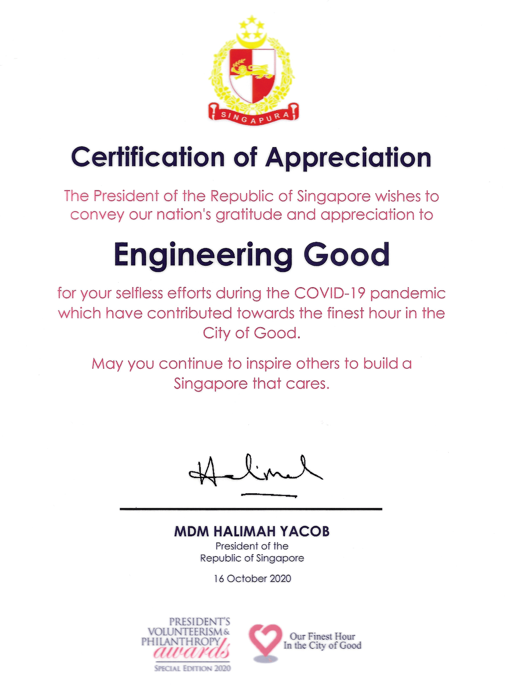
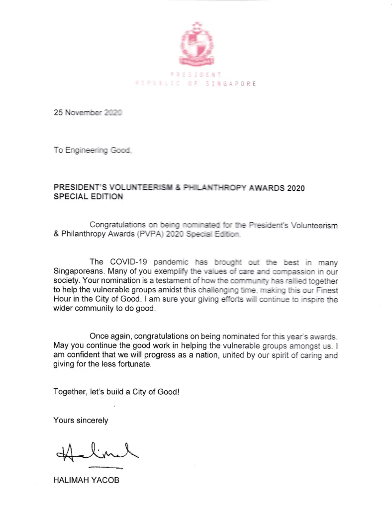
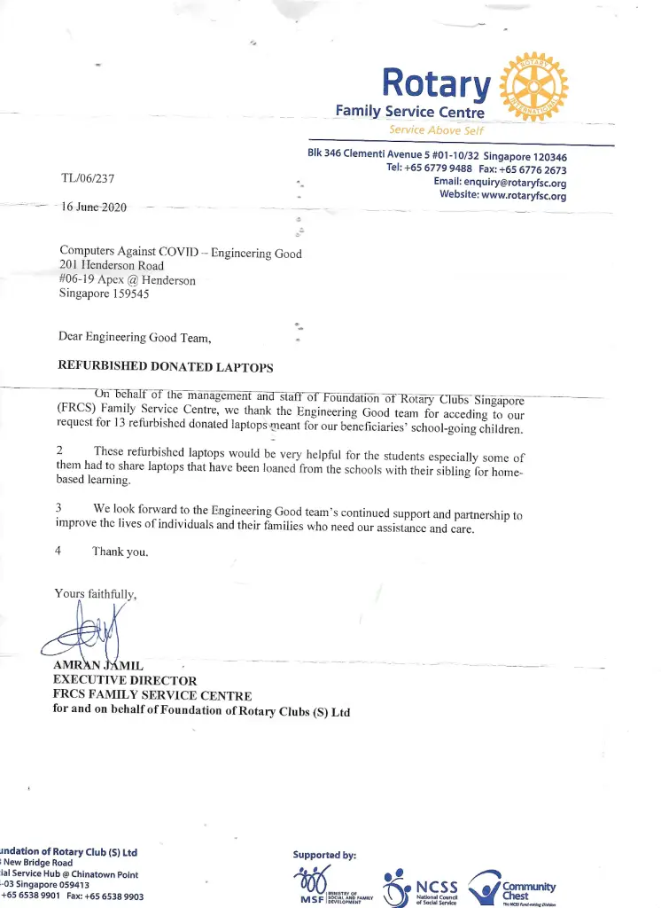
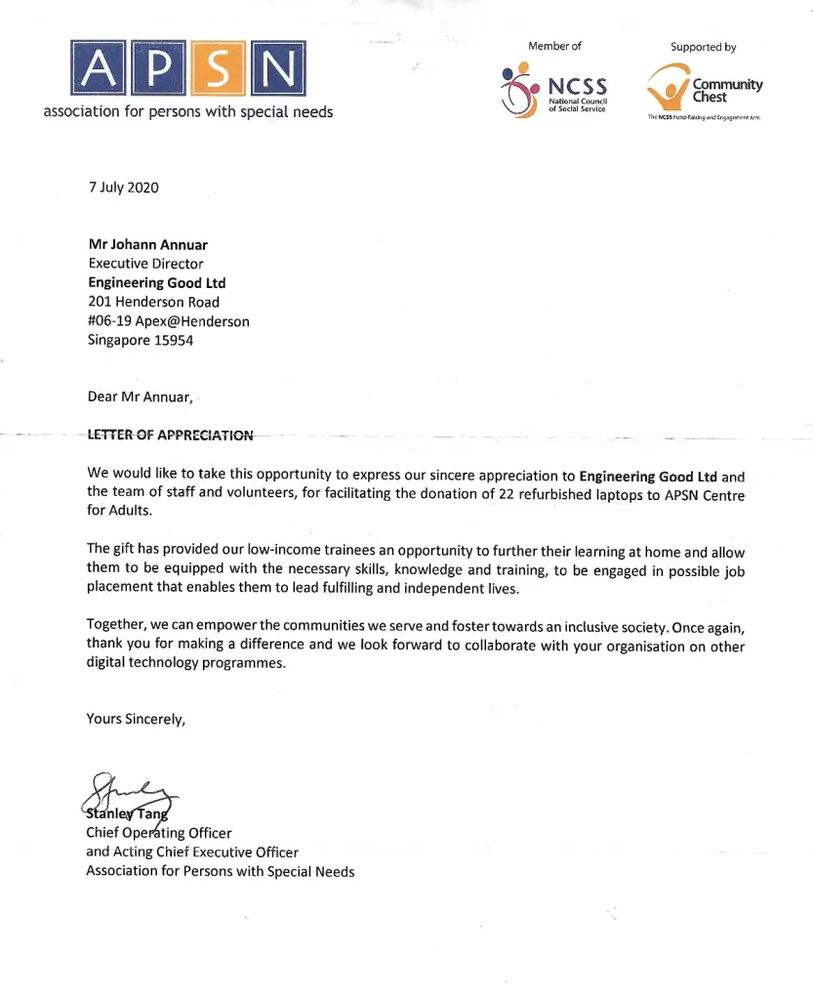
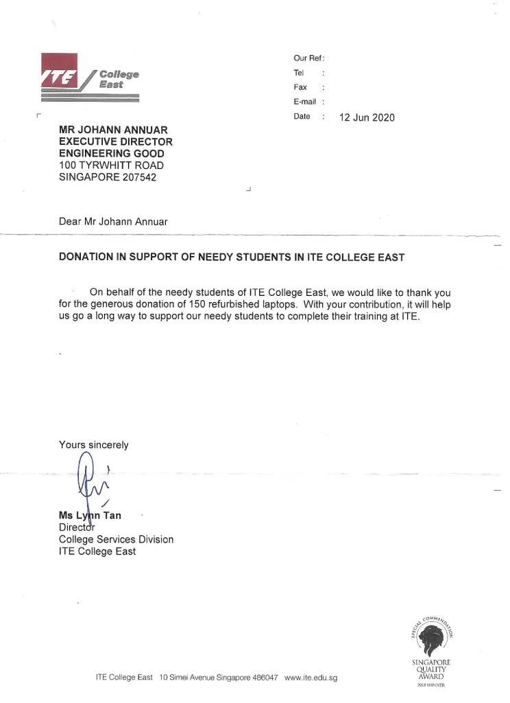

Bridging the Digital Divide
It has been nearly 5 years since we started the initiative to refurbished laptops to support users from disadvantaged communities. In 2020, the onset of COVID-19 created an urgent need for thousands of low-income students who lacked access to laptops for home-based learning. At the same time, seniors and migrant workers were facing digital isolation, where they were unable to connect with their loved ones due to a lack of devices.
In response, EG launched the “Computers Against COVID” program to refurbish laptops for low-income families and vulnerable groups.
A simple Facebook request for 24 laptops rapidly gained attention and grew into a nationwide effort to provide digital tools to those in need. Singaporeans from all walks of life came together, transforming this initiative into a powerful, community-driven movement to bridge the digital divide.
Over the past years, our commitment and dedication have not gone unnoticed. EG have received numerous recognitions and letters of appreciation from the nation’s gratitude, partnering organisations, schools, and more.
A particularly meaningful recognition came from the President’s Volunteerism Philanthropy, which included a certificate acknowledging our contributions, giving us the motivation for EG to “continue to inspire others to build a Singapore that cares.”

In the same year, we too, were nominated for the President's Volunteerism Philanthropy Award (PVPA) 2020 Special Edition.
The letter reads...

“The COVID-19 pandemic has brought out the best in many Singaporeans. Many of you exemplify the values of care and compassion in our society. Your nomination is a testament to how the community has rallied together to help the vulnerable groups amidst this challenging time, making this our Finest Hour in the City of Good. I am sure your giving efforts will continue to inspire the wider community to do good. Once again, congratulations on being nominated for this year’s awards. May you continue the good work in helping the vulnerable groups amongst us. I am confident that we will progress as a nation, united by our spirit of caring and giving for the less fortunate. Together, let’s build a City of Good!”
In the heartfelt letters of appreciation, EG was delighted to receive several organisations’ appreciation through letters and testimonials, stating the impact had been made for the different vulnerable groups, which has driven us to continue pushing the limits of what we can achieve together!
Foundation of Rotary Clubs Singapore Family Service Centre

“1. On behalf of the management and staff of Foundation of Rotary Clubs Singapore (FRCS) Family Service Centre, we thank the Engineering Good team for acceding to our request for 13 refurbished donated laptops meant for our beneficiaries’ school-going children.
2. These refurbished laptops would be very helpful for the students especially some of them had to share laptops that have been loaned from the schools with their sibling for home-based learning.
3. We look forward to the Engineering Good team’s continued support and partnership to improve the lives of individuals and their families who need our assistance and care.
4. Thank you.”
Association for Persons with Special Needs (APSN)

“We would like to take this opportunity to express our sincere appreciation to Engineering Good Ltd and the team of staff and volunteers, for facilitating the donation of 22 refurbished laptops to APSN Centre for Adults. The gift has provided our low-income trainees an opportunity to further their learning at home and allow them to be equipped with the necessary skills, knowledge and training, to be engaged in possible job placement that enables them to lead fulfilling and independent lives. Together, we can empower the communities we serve and foster towards an inclusive society. Once again, thank you for making a difference and we look forward to collaborate with your organisation on other digital technology programmes.”
ITE College East

“On behalf of the needy students of ITE College East. we would like to thank you for the generous donation of 150 refurbished laptops. With your contribution, it will help us go a long way to support our needy students to complete their training at ITE.”
Continuing our commitments to bridging the digital divide between low-income families and vulnerable communities, EG’s Tech For Good – Digital Inclusion & Sustainability program will continue to focus on refurbishing better quality decommissioned corporate laptops and distributing them through community partners to support disadvantaged users. We will also deepen our impact and will be embarking on partnerships with a few social service agencies to deliver digital literacy programmes serving disadvantaged users including:
- Students from low-income families
- Displaced Workers
- Ex-offenders
- Rental flats residents
- Persons with chronic health issues,
- Migrant workers, and more!
By extending the lifecycle of decommissioned laptops, EG plays a part in reducing e-waste and its environmental impact on Singapore.
You can also play a part in this initiative and make a difference! Your donation will support EG’s Tech For Good program by covering part of the costs of providing refurbished laptops to those in need.
To chip in, click Read more about To chip in, click here !!